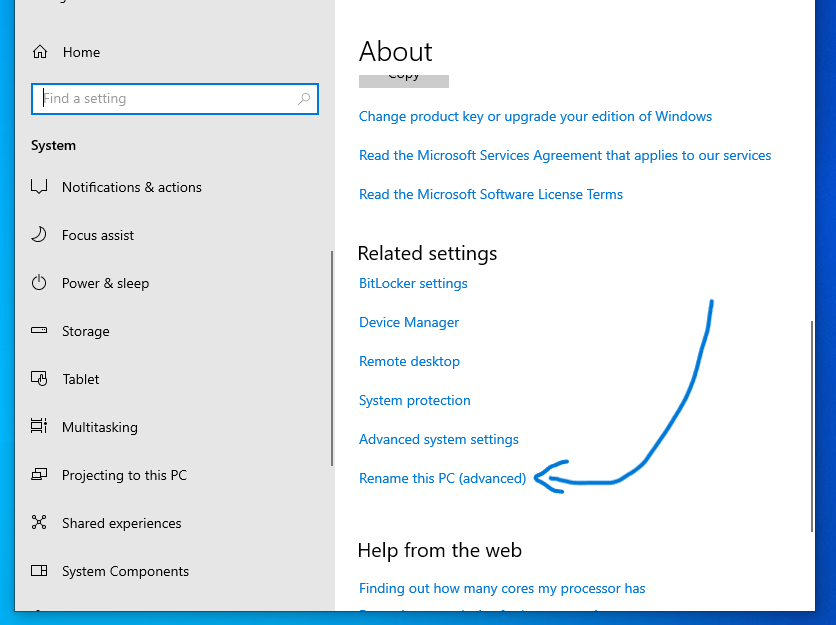
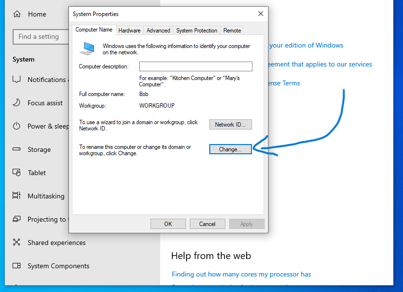
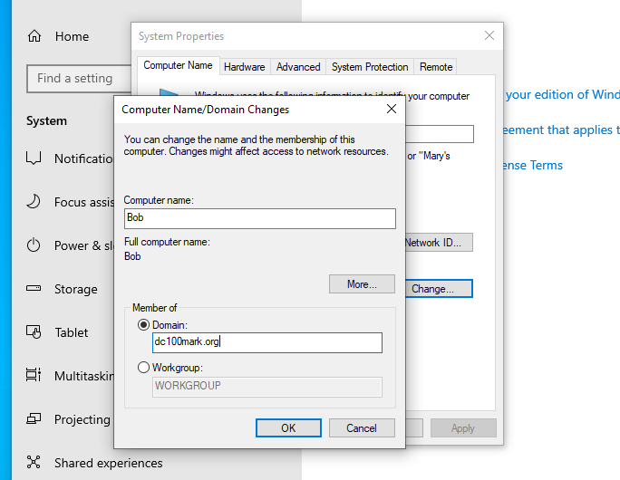
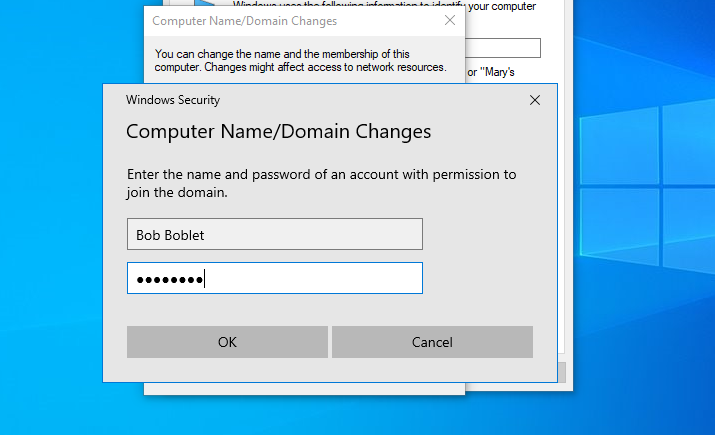
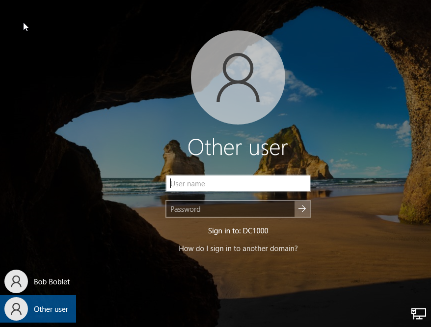

Adding a Client Machine to a Domain Controller
Prerequisites
You have permission to add the client machine to the Domain Controller
- right click the start button and click system
- scroll down to Related Settings
- click on Rename this PC (advanced)

- system properties window will appear
- On the Computer Name tab, click change

- Computer Name/ Domain Changes window will appear
- on the member of section click Domain
- add the server domain and click OK

- A login window will appear
- type in the Username and password of the User's Active Directory object

- If successful, a welcome message will appear
- you will be prompted to restart the PC

- After the PC restarts, click Other User
- sign in with the same username and password used earlier (User's AD credentials)
- The client PC is now connected to the Domian Controller
- There will be no further need for the local account (ie. Bob Boblet local account in the example below)
